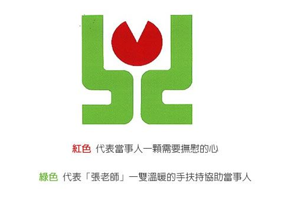

免費校醫駐診
地點：教育樓一樓
內兒科 - 朱欽明醫師 (星期一~星期五 AM8:30~9:30)
中醫師 - 王偉州醫師 (星期二 PM2:00~5:00)
就醫時不需健保卡或學生證，請先自病歷櫃中尋找您的病歷，如為初診者請填寫病歷表。
健康中心醫療物品外借
可借用物品：柺杖、輪椅、急救箱、
三角巾、冷熱敷袋、冰枕、錄影帶
<目錄>、牙齒模型、人體構造圖等
借用方法：
1. 攜帶學生證至健康中心辦理登記
2. 活動所需之急救箱及教具借用，
請於活動前一天至本中心辦理登記領取
3. 借用物品請愛惜使用，使用完畢後請盡速歸還
4. 物品毀損或遺失請照價賠償
學校諮商中心
在成長的路上，難免都會疑惑、傷心與失望，只要你願意與人促膝長談，無
論是學業、感情、家庭、個性、生涯或人際關係等問題，都可與老師一對一的會談，從會談中釐清自己的感受與想法，找出問題原因，採取行動或利用資源改善現況，這就是所謂的個別諮商。
諮商中心每學期皆聘請專業的輔導老師與精神科醫師，每日排定固定的輪值
時間提供諮商服務，為同學解答生活中的各項疑惑。所有關於你個人的資料及會談的內容都將予以保密。
預約辦法：
1. 由本人親至中心填寫線上個別諮商申請表。
2. 至本中心網頁線上預約系統填寫申請(限學校網域)，中心將會盡快安排專業的諮商師與您會談。
張老師專線
在人生的路上，「張老師」陪伴您，您的心事有我願意聽
張老師專線 ： 1980 (中華電信手機撥打免費)
服務時間 ： 星期一~星期六 AM9:00~PM9:00
星期日 AM9:00~PM5:00
